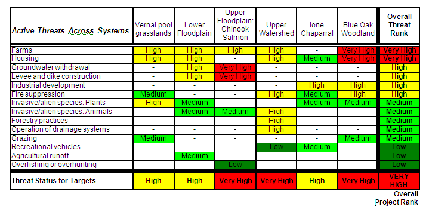

Explanation of How Threat Rating Summaries Are Calculated
Miradi uses a combination of rules for rolling up ratings across targets and threats, and for the project as a whole.
As shown in the grid below, the bottom row contains the overall ratings for each target, and the far right-hand column contains the ratings for each threat. Finally, the cell in the lower right-hand corner contains the overall rating for the project. Normally the overall project rating is based on rolling up the threat ratings in the right-most column, using the 3-5-7 and 2-Prime rules.
3-5-7 Rule
Multiple threats to individual targets and multiple target threat scores are first summed together using the 3-5-7 rule:
- 3 High rated threats are equivalent to 1 Very High-rated threat;
- 5 Medium rated threats are equivalent to 1 High-rated threat;
- 7 Low rated threats are equivalent to 1 Medium-rated threat
In the example below, the second row shows the Housing threat. There are 3 High ratings (which equals 1 Very High) and 1 Very High rating, so it is treated as if it had two Very High ratings. In the Ione Chapparal Column, there are 5 Medium ratings (which equals one High), plus one High, for a total equivalent of 2 High ratings.
2-Prime Rule
After the 3-5-7 rule has been applied, the 2-prime rule is used to determine the rolled up rating for a target, a threat, or for the whole project. This rule requires the equivalent of two ratings at a certain level for the end result to be that level. For example, there would have to be the equivalent of at least two Very High ratings to produce a Very High result, or two ratings of Medium or above to produce a Medium result.
In the example below, the Housing threat row has the equivalent of two Very High ratings (due to the 3-5-7 rule), so the result is Very High. The Recreational Vehicles row has one Medium rating and one Low. Since it does not have two or more Mediums, the result is Low.
Majority Override
The Majority Override rule ensures that the overall project rating is not reduced too much by the other rules. Normally, the overall project rating is a rollup of the threat ratings, using the rules above. However, if a majority of the targets have a rating higher than that computed rollup, then that majority rating is used instead.
For example, if the result of using the 3-5-7 and 2-prime rules gave a project rating of Medium, but 4 out of the 6 targets had at least one rating of at High (or Very High), then the Majority Override rule would take effect and the overall project rating would be High.
